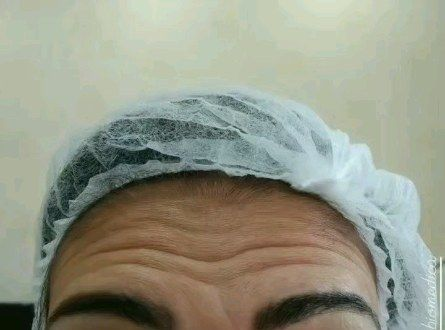

Cris Bertoldo
Biomédica esteta há 24 anos cuidando da pele e da autoestima de quem confia em Taubaté.
Agendar avaliaçãoVinte e quatro anos dedicados à pele e à autoestima de Taubaté
Formada em Biomedicina e especializada em estética, a Dra. Cris Bertoldo (CRBM 49751) atende em Taubaté há mais de duas décadas. Nesse tempo, construiu uma reputação que se sustenta menos em promessa e mais em resultado: pacientes que voltam ano após ano, indicam para a família e continuam confiando os próprios cuidados a ela.
É esse tipo de experiência que só se acumula com o tempo: saber ler cada pele, ajustar cada protocolo, e entregar um resultado natural, sem exageros.
Procedimentos
Uma seleção enxuta de procedimentos, feitos com a mesma atenção de sempre, sem linha de produção.
Limpeza de pele
Higienização profunda, extração e hidratação para renovar a pele do rosto. O procedimento mais procurado por quem está começando a cuidar da pele com regularidade, e também por quem já tem uma rotina de manutenção.
Botox
Suavização de linhas de expressão com técnica precisa e resultado natural, sem perder a expressividade do rosto. Um dos procedimentos mais pedidos por quem já é paciente de longa data.

Registro real de atendimento no consultório
Tratamentos faciais
Protocolos personalizados para as necessidades específicas de cada pele, da oleosidade aos sinais de idade, montados a partir de uma avaliação individual, não de um pacote pronto.
Reputação
Quem já é paciente da Dra. Cris costuma descrever a mesma coisa: cuidado de verdade, atenção aos detalhes e resultados que se mantêm, a ponto de muitas pacientes seguirem com ela há mais de vinte anos.
24 anos de atuação CRBM 49751 Avaliações consistentemente de nota máxima no Google
Perguntas frequentes
- Preciso de indicação médica para agendar?
- Não. Você pode agendar diretamente uma avaliação, e a partir dela a Dra. Cris indica o procedimento mais adequado para o seu caso.
- Quanto tempo dura uma sessão de limpeza de pele?
- Varia de acordo com a condição da pele no dia, mas o atendimento é feito com calma, sem pressa: cada etapa é respeitada.
- O resultado do Botox fica natural?
- Sim. A proposta é suavizar as linhas de expressão sem travar os movimentos do rosto. O objetivo é parecer descansada, não parecer "feita".
- Onde fica o consultório?
- Na R. Bahia, 272, Vila São Geraldo, Taubaté. O atendimento é feito mediante agendamento prévio pelo WhatsApp.
Vinte e quatro anos de experiência a uma mensagem de distância
Fale agora com a Dra. Cris Bertoldo pelo WhatsApp e agende sua avaliação em Taubaté.
Falar no WhatsApp R. Bahia, 272, Vila São Geraldo, Taubaté, SP@dracrisbertoldo_biomedica